Track a moving drone shot of our own parking lot, then put an AT-AT, its escort walker, running troopers and an X-wing fly-by into it so they look filmed there.
12 illustrated stagesFour lessonsTheory deck firstCamera tracking · shadow catcher · sun matching · After Effects
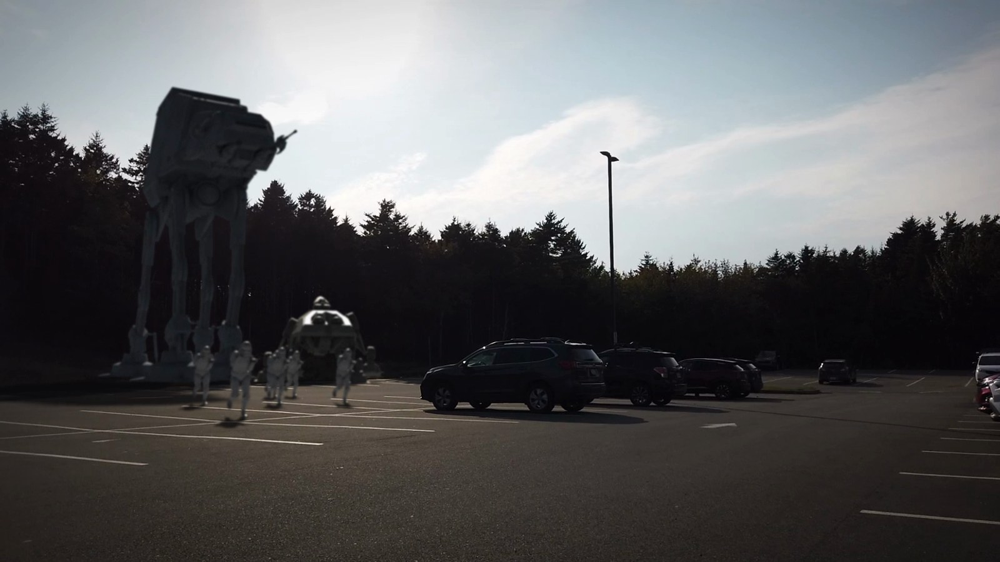
A frame of the finished demo: Blender CG on the drone plate, composited in After Effects.
Track. Build. Light. Match.
Start with the theory deck. The troopers come from Strafing Run; you can use the class copy if you have not made your own.
My supports
Turn on any help you want. Your teacher may have set some for you. They change how the guide helps, not what is assessed.
Shot brief
Something very large is in the staff car park.
Deliver a 9-second shot: the real, moving drone footage of the school lot with an AT-AT, a smaller walker, running troopers and an X-wing fly-by added so they hold still on the ground, match the light and cast shadows. Then make the change your director asks for.
You will hand in
A screenshot of your solve error (under 1 px)
A screenshot of your test-cube shadow next to a real car shadow
The finished MP4 and the director’s version
A three-decision explanation and full credits
What your teacher gives you
The Walker_in_the_Lot folder: the drone clip lot_plate.mp4, atat.blend, walker.blend, trooper.blend and the X-wing model. The AT-AT, walker and trooper models are for classroom use only: do not upload the model files anywhere.
Almost every effects shot starts with a matchmove artist solving the camera, a lighter matching the sun, and a compositor matching black level and grain. They are three separate jobs in a studio; here you do all three on footage of a place you know.
Knowledge first
Why this works.
Open the theory deck for the narrated version with checkpoint questions. In short:
Parallax gives the camera away
Near and far markers slide differently; from that the solver finds the camera’s path.
One real measurement
A floor and one known distance make every object the right size in the right place.
Read the light before adding any
Shadow direction and length tell you where the sun is. A backlit plate needs dark CG.
Three matches
Black level, softness and grain.
Design principles in the shot
Scale: troopers near, walker far. Contrast: dark shapes against a bright sky. Movement: three speeds at three distances.
What this assesses
Skills you will show.
Skill (ID)
Where you show it
Camera tracking and matchmove · VP-TRK-01
Steps 1–4
Integration: grounding, light and colour match · VP-INT-01
Steps 5, 6, 10, 11
Cycles and locomotion · AN-CYC-01
Steps 7, 8
Keyframes and Graph Editor (3D) · BL-KEY-01
Steps 7–9
Staging, shot design and film grammar · AN-STG-01
Steps 7–9
Render · BL-RND-01
Step 9
Critique and refinement · GD-CRIT-01
Step 12
Primary achievement evidence: the director’s change (step 12). Guided steps, recall questions and supports are recorded separately from achievement. Shot-library option in sprint mm12-26-s08. Skill IDs AN-, BL- and VP- were approved on 3 Oct 2026 and are being registered.
Session A · Lesson 1 · Blender
Track the camera.
A virtual camera that moves exactly like the drone did, with a solve error under 1 pixel.
TODAYTheory deck (12 min), load the clip (10 min), detect and track (25 min), solve and clean (23 min).
01
Load the clip into the Movie Clip Editor
IN SHORTMovie Clip Editor; Open; Set Scene Frames; 29.97 fps; Prefetch; watch for fixed things.
READ ALOUD
DOCUMENT: New Blender file lot_YOURNAME.blend SELECT: lot_plate.mp4 from the class folder TOOLS / ROUTE: Editor Type › Movie Clip Editor · Open · Set Scene Frames · Prefetch
New Blender file. Save As lot_YOURNAME.blend in a folder that also holds lot_plate.mp4.
Change the big 3D Viewport into a Movie Clip Editor (Editor Type button, top-left corner of the area). Click Open and choose lot_plate.mp4.
In the left toolbar, Track tab, click Set Scene Frames. The timeline End becomes 270. In Output properties set Frame Rate to 29.97.
Click Prefetch so the clip plays smoothly, then press Space and watch it twice. Say out loud which things never move: lines, wheels, trunks, the lamp post.
The finished demo: Blender CG composited onto the drone plate in After Effects (9 seconds).
Action by action: what to click (orange boxes), and what you should see
1Open the clip, then Set Scene Frames and Prefetch.
Click
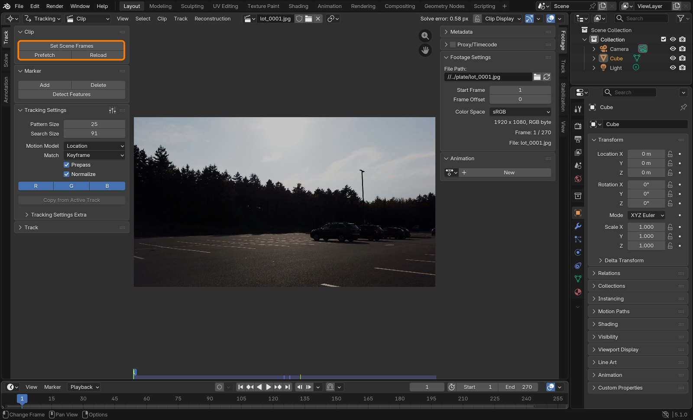
Box: Set Scene Frames, Prefetch. The clip details are on the right.
STEP CHECKLIST
GLOSSARY
Plate: The filmed footage you add effects to
Matchmove: Copying the real camera’s movement into 3D
WHYEverything you add later is only as steady as this camera. Looking before tracking tells you where good markers will come from.
CHECKThe clip plays in the editor, the timeline ends at 270, and you can name three fixed things in the shot.
FIXNo Track tab on the left? Press T with the mouse over the clip. The clip is black? You opened the folder, not the file.
WORKED EXAMPLE · DIFFERENT OBJECTAny phone or drone clip with a slow move and plenty of detail can be tracked the same way.
STRETCH (AFTER THE CHECK PASSES)Scrub to the frame where the camera turns fastest. Write its number down: tracks are most likely to break there.
Method basis: B1 · T1. Values and sequence are authored for this project.
02
Detect features and track them
IN SHORTSettings; Detect Features on 1, 140, 270; delete sky markers; track both ways; delete sliders.
READ ALOUD
DOCUMENT: lot_YOURNAME.blend · Movie Clip Editor SELECT: The clip on frame 1 TOOLS / ROUTE: Detect Features · Ctrl+T (track forwards) · Shift+Ctrl+T (track backwards) · X (delete)
Go to frame 1. In the Track tab, Tracking Settings: Pattern Size 25, Search Size 91, tick Normalize.
Click Detect Features. In the box that appears bottom-left, set Threshold 0.18 and Distance 70. Markers appear on corners and edges.
Click on any marker that sits on sky, cloud or the sun’s glare and delete it (X). Then select all (A) and press Ctrl+T. Blender follows every marker to the end of the clip.
Go to frame 140. Detect Features again and delete the sky ones. With only the new markers selected press Ctrl+T, come back to 140 and press Shift+Ctrl+T to track them backwards. Repeat on frame 270 (backwards only).
Scrub the clip. Every marker should stay glued to its spot. Delete any that slide.
Action by action: what to click (orange boxes), and what you should see
1Detect Features on frame 1.
Click
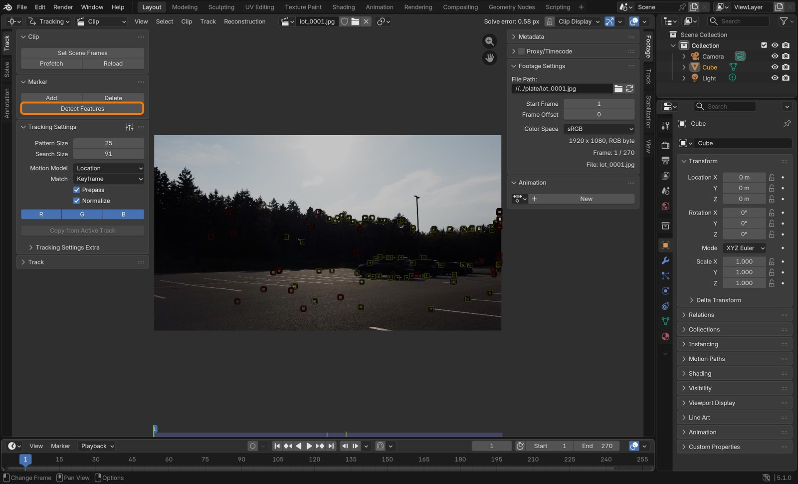
Box: Detect Features. Yellow squares are the new markers.It should look like this
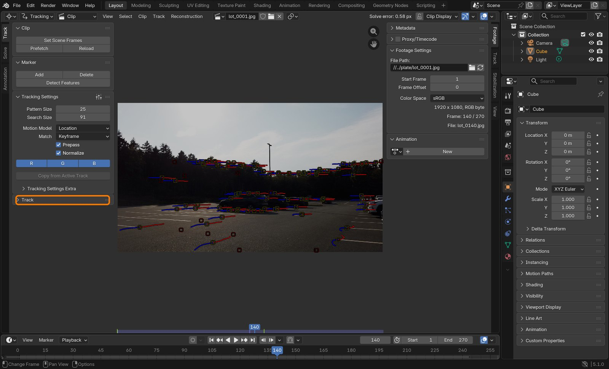
After tracking: each marker has a tail showing its path. The Track panel (boxed) holds the same commands as Ctrl+T.
STEP CHECKLIST
GLOSSARY
Marker: A small box that follows one spot
Parallax: Near things slide faster than far things when the camera moves
WHYOne detection is not enough: things that enter the frame later have no marker. Detecting at the start, middle and end gives the solver points all the way through.
CHECKMore than 60 markers with red and blue tails, spread over near asphalt, the cars and the far tree line.
FIXA marker stops early? That is normal. A marker jumps to a different spot? Delete it.
WORKED EXAMPLE · DIFFERENT OBJECTThe same detect-and-track routine works for sticking a sign on a wall or a screen on a phone.
STRETCH (AFTER THE CHECK PASSES)Turn on the Graph view of the clip editor: curves that spike are bad tracks.
Method basis: B1. Values and sequence are authored for this project.
03
Solve the camera and clean the tracks
IN SHORTKeyframes 1 and 150; refine focal length; solve; clean at 2 px then 1.2 px; record the error.
READ ALOUD
DOCUMENT: lot_YOURNAME.blend · Movie Clip Editor SELECT: Your tracked markers TOOLS / ROUTE: Solve tab · Keyframe A / B · Refine › Focal Length · Solve Camera Motion · Clean Up
Open the Solve tab on the left. Set Keyframe A 1 and Keyframe B 150: two frames where the camera has clearly moved.
Under Refine tick Focal Length (we do not know the drone’s exact lens). Click Solve Camera Motion.
Read Solve error in the header, top right. Under 1.0 px: go on. Over 1.0: open Clean Up, set Reprojection Error to 2, Action Select, click Clean Tracks, look at what was selected, delete it (X), and solve again.
Repeat with Clean Up at 1.2 if needed, but keep at least 30 markers.
Write your solve error and marker count in your notes.
Action by action: what to click (orange boxes), and what you should see
1Solve tab: keyframes, Refine Focal Length, Solve Camera Motion.
Click
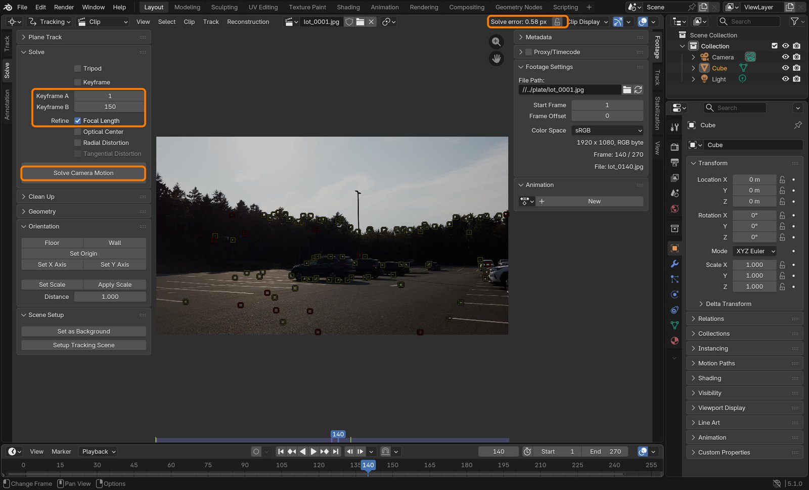
Boxes: Keyframe A and B with Refine Focal Length; Solve Camera Motion; the solve error in the header.
Object
Setting
Value
Tracking settings
Pattern / Search
25 / 91
Detect Features
Threshold / Distance
0.18 / 70
Solve
Keyframe A / B
1 / 150
Demo result
Solve error
0.58 px
What went wrong when we built the demo: our first solve was 1.9 px. The worst markers were all on the bright haze around the sun. Deleting the worst tenth brought it to 0.58 px.
STEP CHECKLIST
GLOSSARY
Solve: Calculate the camera path from the markers
Solve error: How far, in pixels, the markers disagree with the solved camera
WHYThe solve error is the average distance between where each marker is and where the solved camera says it should be. Small error means CG that does not slide.
CHECKSolve error under 1.0 px (the demo: 0.58 px with 144 markers, focal length about 26 mm).
FIXError stays high? Look for markers on the moving sun glare or on reflections in car windows. Still stuck: change Keyframe B to 230 and solve again.
WORKED EXAMPLE · DIFFERENT OBJECTFilm crews judge a track with exactly this number before a shot goes to animation.
STRETCH (AFTER THE CHECK PASSES)Compare your focal length with a classmate’s. Why might they differ, and does it matter if both errors are low?
Method basis: B2. Values and sequence are authored for this project.
Session B · Lesson 2 · Blender
Build the set on the plate.
A scene the right way up and the right size, with a sun that matches the real one and a floor that catches shadows.
TODAYRecall (5 min), floor and scale (20 min), tracking scene and shadow catcher (20 min), sun (25 min).
04
Set the floor, the origin and the scale
Recall first (from last lesson, no peeking):
What is parallax, and why does the solver need it?
What solve error is good enough, and what do you do if yours is higher?
Name two things you should never put a marker on.
Say or write your answers, then check them against your file.
IN SHORTThree ground markers › Floor; one › Set Origin; two a known distance apart › Set Scale; check a car roof.
READ ALOUD
DOCUMENT: lot_YOURNAME.blend · Movie Clip Editor, Solve tab SELECT: Markers on the asphalt TOOLS / ROUTE: Orientation › Floor · Set Origin · Set Scale · Distance
Select three markers on the asphalt, far apart from each other (Shift+click): painted-line corners are best. Click Floor.
Select one marker on the ground near the camera’s first position and click Set Origin.
Select two markers on the two long lines of one parking stall. Type 2.6 in Distance and click Set Scale. (If your markers are not on stall lines, use the top and bottom of the nearest car door instead: about 1.2 m.)
Check it: select a marker on the roof of the nearest car, switch any area to a 3D Viewport and read its height. It should be between 1.4 and 1.9 m.
If the roof is 3 m up or 0.5 m up, your scale markers were wrong. Pick two others and Set Scale again.
Action by action: what to click (orange boxes), and what you should see
1Orientation panel, then Scene Setup (next step).
Click
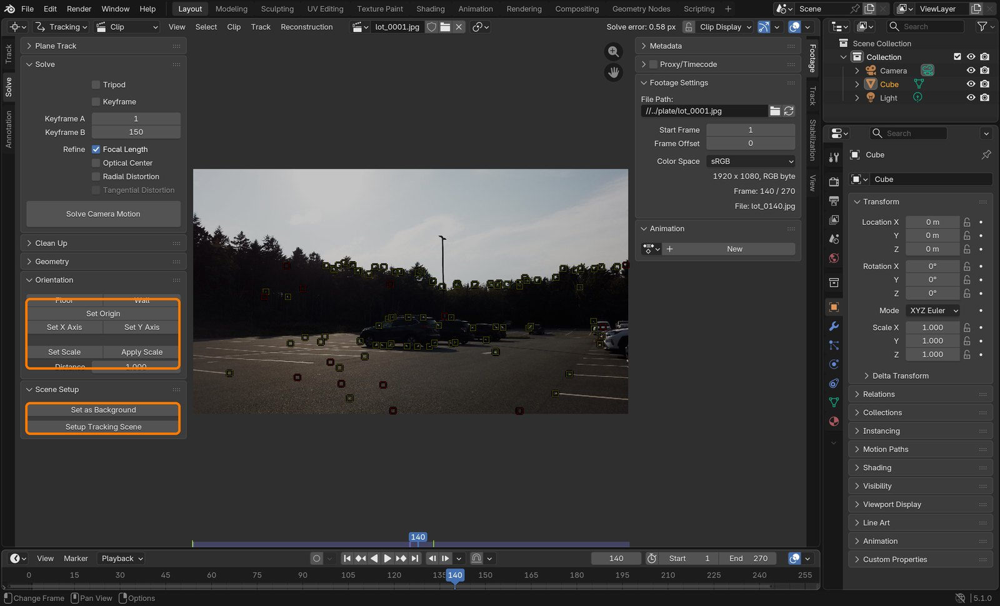
Boxes: Floor, Set Origin, Set Scale and Distance; below them Set as Background and Setup Tracking Scene.
What went wrong when we built the demo: we skipped this and guessed that the camera was 1.7 m off the ground. It was really about 1.05 m. Everything came out 40% too big and the walker stood in the wrong place. One measured stall would have saved an hour.
STEP CHECKLIST
GLOSSARY
Origin: The zero point of the 3D world
Scale: How big one Blender unit is in the real world
WHYWith a true floor and a true metre, a 1.8 m trooper and a 20 m walker arrive the right size at the right distance, and their shadows fall on the real ground.
CHECKThe grid floor lies on the asphalt and a car roof reads about 1.7 m high.
FIXThe scene is upside down? Your three floor markers were nearly in a line. Pick three that make a big triangle.
WORKED EXAMPLE · DIFFERENT OBJECTSurveyors and set builders do the same thing with a tape measure: one known length sets everything else.
STRETCH (AFTER THE CHECK PASSES)Measure a real stall in the lot with a tape and use your number instead of 2.6.
Method basis: B2. Values and sequence are authored for this project.
05
Set up the tracking scene and the shadow catcher
IN SHORTSetup Tracking Scene; check in camera view; Cycles + Film Transparent; ground › Shadow Catcher.
READ ALOUD
DOCUMENT: lot_YOURNAME.blend SELECT: The solved camera TOOLS / ROUTE: Scene Setup › Setup Tracking Scene · Render Engine › Cycles · Object › Visibility › Mask › Shadow Catcher · Film › Transparent
In the Solve tab click Setup Tracking Scene. Blender makes a camera that follows the solve, puts the clip behind it, and adds a ground plane.
Change an area to a 3D Viewport and press Numpad 0. Play: the grid stays glued to the asphalt.
Render properties: Render Engine Cycles, Device GPU Compute. Open Film and tick Transparent.
Select the ground plane and rename it Ground (shadow catcher). Scale it to about 400 m. In Object properties open Visibility, then under Mask tick Shadow Catcher.
Delete the test cube and the extra light Blender added. In the Compositor, remove any nodes Blender added: you will composite in After Effects.
Action by action: what to click (orange boxes), and what you should see
1The camera view after Setup Tracking Scene, with the walkers already added for scale.
Click
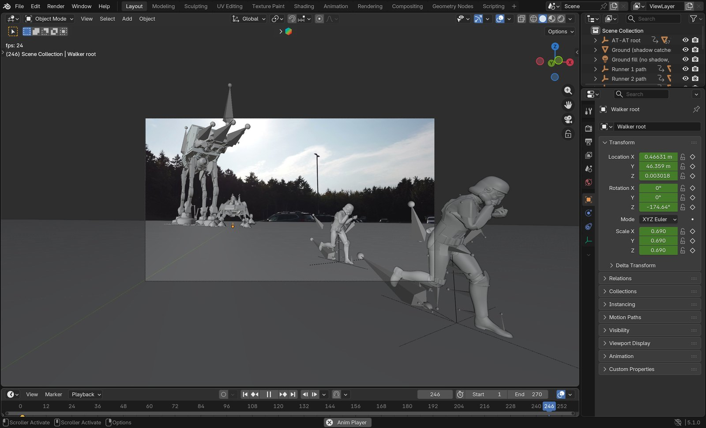
The clip sits behind the camera. Objects on the floor stay put when you play.
Boxes: the ground object in the Outliner, and the Visibility panel. Open it and tick Mask › Shadow Catcher.
STEP CHECKLIST
GLOSSARY
Shadow catcher: An invisible surface that only shows shadows
Film Transparent: Renders the background as see-through
WHYA shadow catcher renders only the shadows that fall on it. That is how a CG shadow lands on real asphalt.
CHECKCamera view shows the clip with a grid stuck to the ground; the ground object has Shadow Catcher ticked.
FIXNo Shadow Catcher tick box? The render engine is still EEVEE. Switch to Cycles first.
WORKED EXAMPLE · DIFFERENT OBJECTProduct adverts use the same trick to put a rendered car on a photographed road.
STRETCH (AFTER THE CHECK PASSES)Add a second, smaller catcher shaped like the nearest car’s bonnet so shadows can fall on the car too.
Method basis: B2 · B3. Values and sequence are authored for this project.
06
Match the sun
IN SHORTRead the real shadows; add a Sun in front; Strength 6, Angle 2°; World 0.06; test with a cube.
READ ALOUD
DOCUMENT: lot_YOURNAME.blend SELECT: The real shadows in the clip TOOLS / ROUTE: Shift+A › Light › Sun · R (rotate) · Strength · Angle · World › Strength
Look at the clip. The car shadows fall toward the camera and are about as long as the cars are tall. So the sun is in front of us, about 35° up.
Shift+A › Light › Sun. In the top view rotate it so it shines from the far tree line back toward the camera; in the side view tilt it 35° above the ground.
World properties: colour pale blue, Strength 0.06. The plate is exposed for the bright sky, so the shade side must stay dark.
Add a cube 1.7 m tall beside the nearest car (in 3D). Render one frame (F12). Its shadow should point the same way and be about the same length as the car’s. Adjust the sun until it does, then delete the cube.
Action by action: what to click (orange boxes), and what you should see
1Shift+A › Light › Sun.
Click
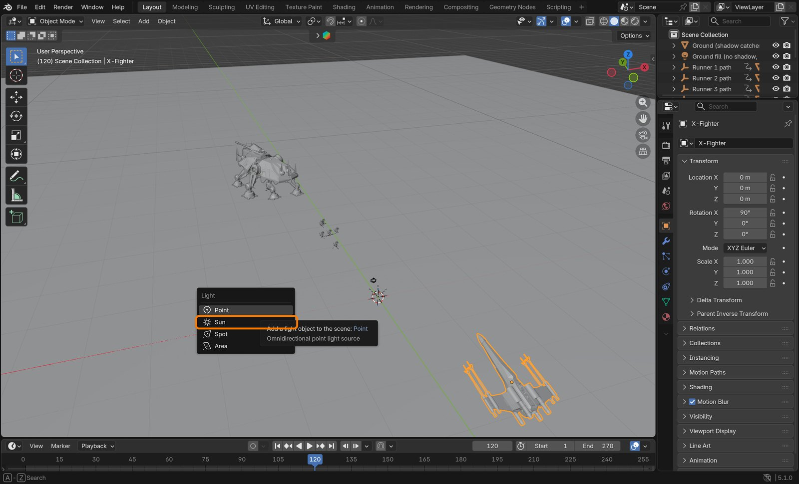
Box: Sun in the Add › Light menu.It should look like this
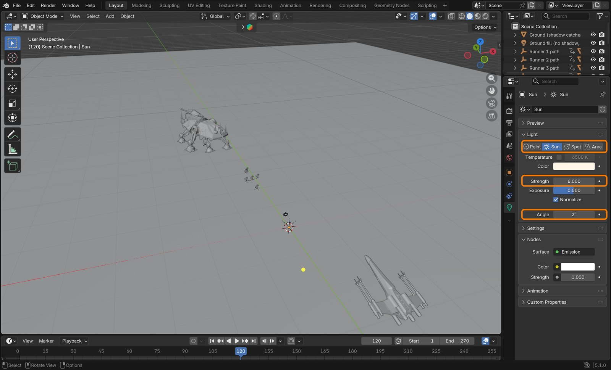
Boxes: Sun type, Strength 6, Angle 2°. The lamp’s line shows which way it shines.
Object
Setting
Value
Sun
Strength / Angle
6 / 2°
Sun
Height above ground
about 35°
World
Strength
0.06
Ground fill (extension)
Strength, no shadow, ground only
3
What went wrong when we built the demo: our first render had the walker bright on the side facing the camera. Two causes: the fill light was four times too strong, and the model’s normal map was missing, which makes surfaces shade wrongly. Lowering World Strength and unplugging the broken Normal Map node fixed it.
STEP CHECKLIST
GLOSSARY
Backlit: Lit from behind, so the side you see is in shade
Fill: Soft light that lifts the shadows
WHYViewers do not check shadows on purpose, but they feel it when the directions disagree.
CHECKA test cube’s shadow is parallel to the real car shadows and about the same length.
FIXShadow points away from the camera? The sun is behind you: rotate it 180°.
WORKED EXAMPLE · DIFFERENT OBJECTOn a film set the gaffer notes the sun’s direction for every plate, for exactly this reason.
STRETCH (AFTER THE CHECK PASSES)Add a second Sun at Strength 3 with Shadow off (Light properties) and, in Object › Shading › Light Linking, make it light only the ground. The caught shadow becomes grey like the real ones, not black.
Method basis: B3. Values and sequence are authored for this project.
Session C · Lesson 3 · Blender
Walker, runners, fly-by.
Three layers of action at three distances, rendered with shadows on a transparent background.
TODAYRecall (5 min), the two walkers (20 min), runners (20 min), fly-by and render (25 min).
07
Bring in the AT-AT and its escort
Recall first (from last lesson, no peeking):
Which two things does Orientation tell Blender?
What does a shadow catcher render?
The real shadows point toward the camera. Where is your sun?
Say or write your answers, then check them against your file.
IN SHORTAppend; parent to an empty; Walk action, Make Cyclic; two location keys on open ground; match travel to the feet; repeat for the escort.
READ ALOUD
DOCUMENT: lot_YOURNAME.blend SELECT: atat.blend and walker.blend from the class folder TOOLS / ROUTE: File › Append · Action Editor › Walk · Graph Editor › Channel › Extrapolation Mode › Make Cyclic · I (keyframe)
File › Append › atat.blend › Object: select everything. Add an Empty named AT-AT root and parent the AT-AT armature to it (select the armature, Shift+click the empty, Ctrl+P). Scale the root 0.9: the walker stands about 20 m tall.
Select the AT-AT armature. Dope Sheet › Action Editor: choose the action Walk. In the Graph Editor select all its curves and choose Channel › Extrapolation Mode › Make Cyclic. It now walks forever, but on the spot.
Put the root on open asphalt at the far end of the lot, where no real car stands between it and the camera. Frame 1: Location about (−12, 66), press I. Frame 270: about (−7.3, 54), press I. Turn the root so the walker faces the way it travels.
Play it in camera view and watch one foot while it is on the ground. If it slides forward, the walker is travelling too slowly: move the frame-270 key further. If it slides back, move the key closer. The demo uses 12.8 m in 9 seconds as its starting point.
Append walker.blend (the smaller AT-TE) the same way, on an empty named Walker root, about 6 m tall, Make Cyclic on its action. Key it from (−1, 62) to (0.5, 46): beside the AT-AT, left of the parked cars.
Action by action: what to click (orange boxes), and what you should see
1The AT-AT root at frame 270 with its Location keyed.
Click
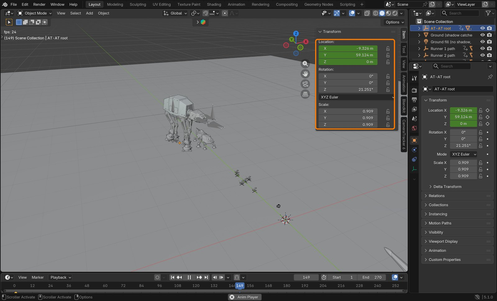
Box: Location and Scale 0.909 of AT-AT root in the sidebar (N). Yellow means keyed on this frame.It should look like this
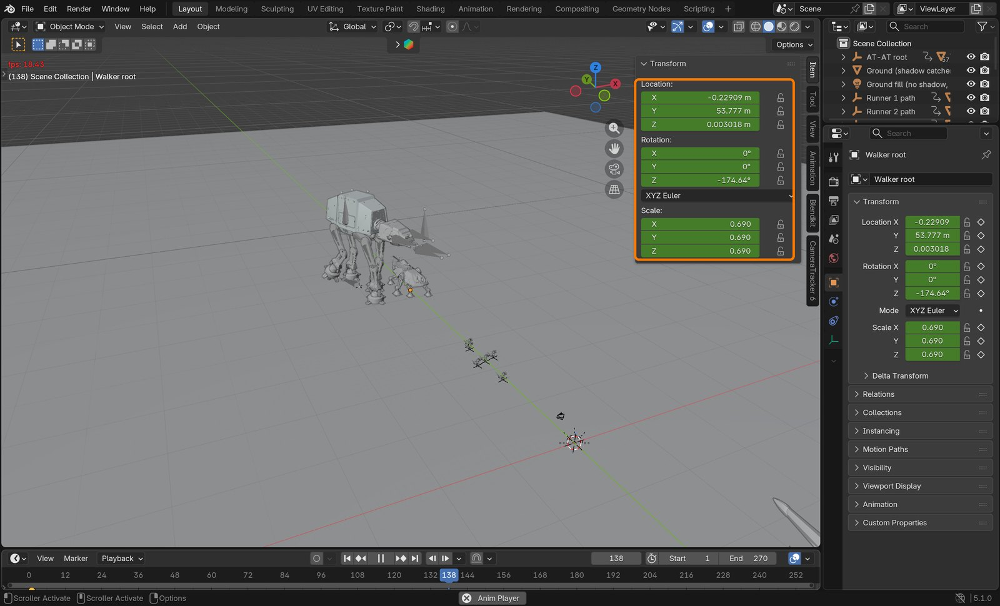
The escort’s Walker root, keyed the same way.
Object
Setting
Value
AT-AT root
Scale / height
0.9 / about 20 m
AT-AT root
Location frame 1 → 270
(−12, 66) → (−7.3, 54)
Walker root (AT-TE)
Height / Location frame 1 → 270
6 m / (−1, 62) → (0.5, 46)
What went wrong when we built the demo: in our first layout a walker stood behind the parked SUV, but it rendered on top of it. Moving it onto open asphalt was faster and looked better than cutting the car out. The AT-AT also arrived white: its colour images were not plugged in. Open each material in the Shader Editor and connect the diffuse image to Base Color (the class file already has this done).
STEP CHECKLIST
GLOSSARY
Append: Copy objects in from another .blend file
Foot slide: Feet skating because the travel speed does not match the walk cycle
WHYA walk cycle that walks on the spot has to be carried forward at exactly the speed its feet push back, or the feet skate. And CG cannot go behind a real object unless you cut it out by hand, so both walkers stay on open ground.
CHECKIn camera view the AT-AT towers over the tree line with the smaller walker beside it; planted feet stay planted; neither crosses a parked car.
FIXThe walkers drift sideways as the camera moves? Your floor or scale is off: go back to step 4.
WORKED EXAMPLE · DIFFERENT OBJECTEvery game character has the same problem: the walk animation and the movement speed must agree.
STRETCH (AFTER THE CHECK PASSES)Switch the AT-AT’s action to Walk and shoot for the frames the X-wing passes.
Method basis: S1 · B4. Values and sequence are authored for this project.
08
Add the running troopers
IN SHORTAppend trooper; Run action cyclic; parent to an empty; key the empty; linear extrapolation; duplicate and offset.
File › Append › trooper.blend › Object: Trooper and its three meshes. Scale 0.011 (about 1.8 m).
Select the Trooper armature. In the Dope Sheet › Action Editor choose the action Run. In the Graph Editor: Channel › Extrapolation Mode › Make Cyclic.
Add an Empty named Runner 1 path and parent the trooper to it. The empty travels; the trooper runs on the spot inside it.
Key the empty’s Location: frame 6 at about (−5, 40), then about 220 frames later at (5.5, 1): from the walkers’ feet to just past the camera. That is about 5 m per second. Turn the empty to face along the run.
Set the empty’s curves to Linear Extrapolation (Graph Editor, Shift+E) so the runner is already moving before its first key.
Duplicate runner and empty five times (Shift+D). Move each a metre or two sideways and shift its keys 10–15 frames later so they do not run in step.
Action by action: what to click (orange boxes), and what you should see
1The empty’s Location curves in the Graph Editor.
Click
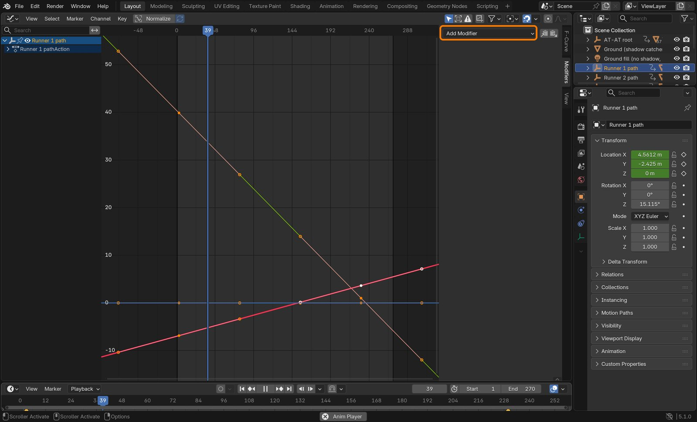
Box: Add Modifier (Cycles) in the sidebar’s Modifiers tab. Channel › Extrapolation Mode does the same from the menu.It should look like this
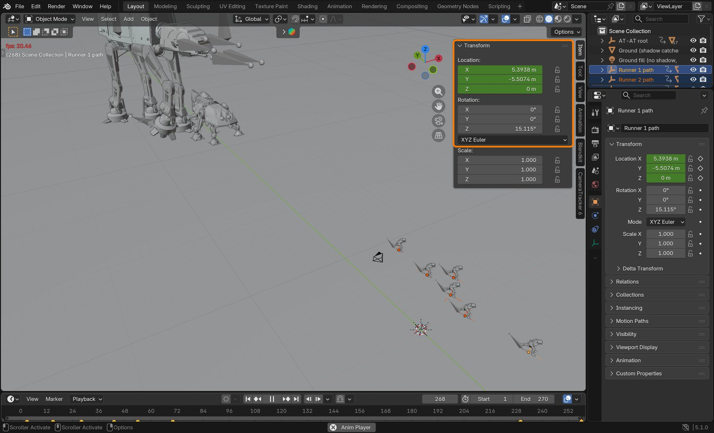
Six runner empties selected between the walker and the camera.
STEP CHECKLIST
GLOSSARY
Cycle: An animation that repeats seamlessly
Extrapolation: What a curve does before its first key and after its last
WHYNear, human-sized figures give the eye a ruler. The AT-AT only looks 20 m tall because a trooper looks 1.8 m.
CHECKSix troopers run toward and past the camera, on the ground, out of step, never through a parked car.
FIXThey run backwards? Rotate the empty 180°. Feet slide? The distance and frames do not match the stride: aim for about 5 m per second.
WORKED EXAMPLE · DIFFERENT OBJECTCrowds in films are a few cycles duplicated and offset, just like this.
STRETCH (AFTER THE CHECK PASSES)Give two runners the Hit action as the X-wing passes, using NLA strips from Strafing Run.
Method basis: X1 · B4. Values and sequence are authored for this project.
09
Fly the X-wing over and render the CG pass
IN SHORTImport the X-wing; two keys from behind the camera to the sky; motion blur; PNG RGBA; render the animation.
File › Import › Wavefront (.obj) › X-Fighter.obj. Parent it to an Empty named X-wing, scale the empty 0.01, and plug XWing_Diffuse_01 into the material’s Base Color.
Frame 192: put the empty behind and above the camera, about (5, −30, 7). Key Location and Rotation. Frame 270: far ahead and climbing, about (−10, 230, 80). Key again. Point the nose along the path and bank it about 18°.
Scrub in camera view. The ship should drop into the top of the frame around frame 220, pass the AT-AT’s head and climb into the sky above the trees.
Render properties: tick Motion Blur, Samples 48. Output properties: a new folder cg, File Format PNG, Color RGBA.
Render one frame (F12) to check, then Render › Render Animation (Ctrl+F12). On a school computer, 270 frames take roughly 40 minutes: start it before the end of the lesson.
Action by action: what to click (orange boxes), and what you should see
1The fly-by path: two keys, seen from the side.
Click
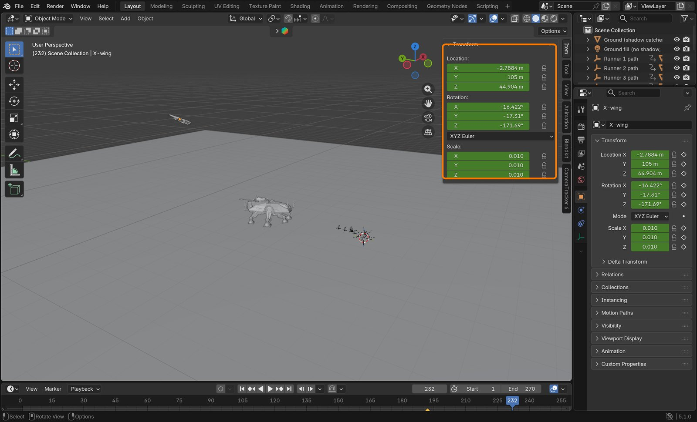
Box: the X-wing’s Location, Rotation and Scale (0.01). It is high above the walker at frame 232.
2Render properties, then Output properties.
Click
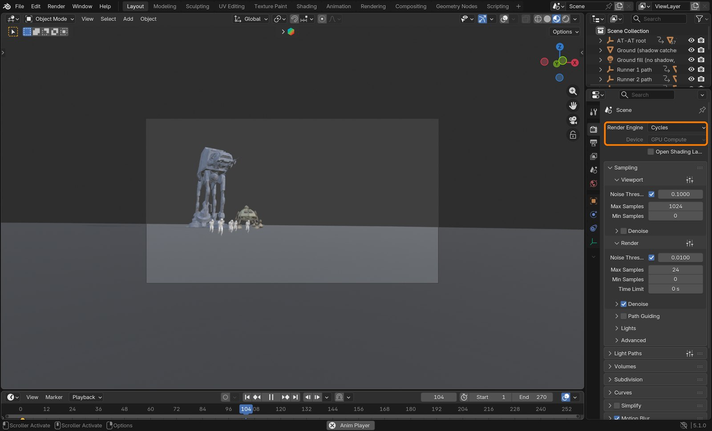
Box: Render Engine Cycles, Device GPU Compute. Film › Transparent is further down the same tab.It should look like this
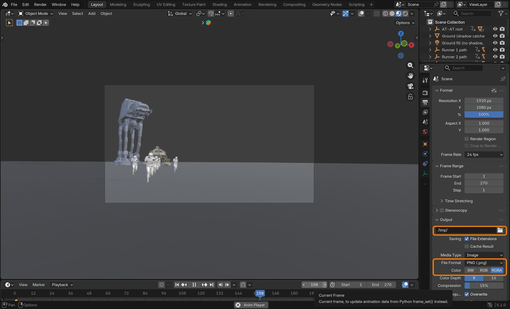
Boxes: the output folder, and File Format PNG with Color RGBA.
Object
Setting
Value
Runner paths
Start → end
(−5, 40) → (5.5, 1), about 220 frames
X-wing
Location frame 192 → 270
(5, −30, 7) → (−10, 230, 80)
Render
Samples / format
48 / PNG RGBA
STEP CHECKLIST
GLOSSARY
RGBA: Red, green, blue plus alpha (transparency)
Motion blur: Streaking of fast things during one frame
WHYRGBA keeps the transparency, so After Effects can lay the walker, its shadow and nothing else over the plate.
CHECKA cg folder with 270 PNG files. Opened in an image viewer they show CG and soft shadows on a transparent background.
FIXThe render has the car park in it? Film › Transparent is off, or a compositor node is still adding the clip.
WORKED EXAMPLE · DIFFERENT OBJECTEvery CG element in a film is delivered to the compositor like this: on transparency, with its own shadow.
STRETCH (AFTER THE CHECK PASSES)Add a second X-wing 20 frames behind and 6 m to the left.
Method basis: V1 · B3. Values and sequence are authored for this project.
Session D · Lesson 4 · After Effects
Make it sit in the plate.
The CG matched to the drone footage, a pass-over the audience feels, and your own version.
TODAYRecall (5 min), import and match (25 min), glow, shake and export (20 min), director’s card (20 min, continue next lesson if needed).
10
Import the plate and the CG, then match them
Recall first (from last lesson, no peeking):
Why do the walkers stand on open asphalt and not behind a car?
What does Make Cyclic do to the walk?
Why render PNG with RGBA and not an MP4?
Say or write your answers, then check them against your file.
IN SHORTImport both; comp from the plate; CG on top; Brightness & Contrast to the SUV’s shade; Box Blur 1.2; Noise 4%.
File › Import › File: lot_plate.mp4. Import again: click the first PNG in cg with PNG Sequence ticked. Right-click it › Interpret Footage › Main: frame rate 29.97.
Drag the plate onto the New Composition button. Drag the CG sequence into the timeline above the plate. Rename the layers 1 Plate and 2 CG.
Go to frame 190. Compare the darkest part of the walker with the shade side of the parked SUV. Select 2 CG and add Effect › Color Correction › Brightness & Contrast. Lower Brightness (about −38) and raise Contrast (about 26) until they match.
Add Effect › Blur & Sharpen › Box Blur, radius about 1.2, and Effect › Noise & Grain › Noise, about 4%.
Turn the three effects off and on (the fx switch). Which one makes the biggest difference?
Action by action: what to click (orange boxes), and what you should see
1The project with the plate and the CG sequence, and the two layers.
Click
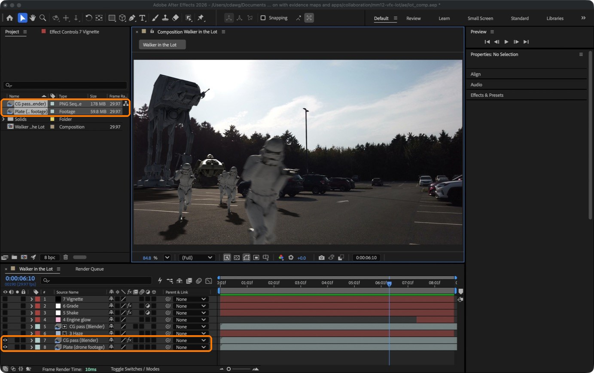
Boxes: the two footage items in the Project panel, and the CG layer above the plate in the Timeline. The CG is still too bright.It should look like this
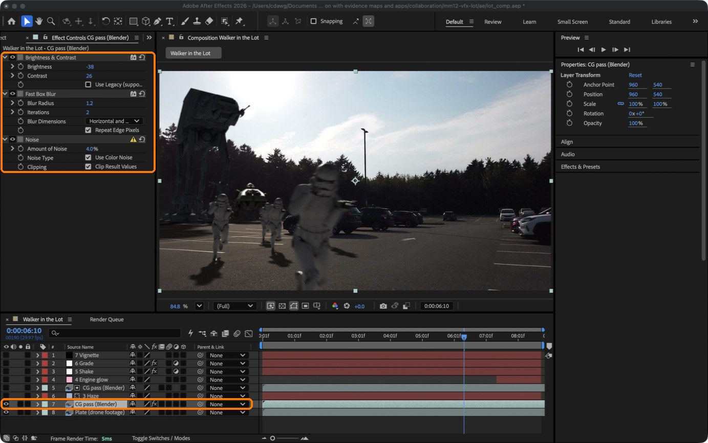
Boxes: Brightness & Contrast (−38, 26), Fast Box Blur (1.2) and Noise (4%) in Effect Controls, with the CG layer selected.
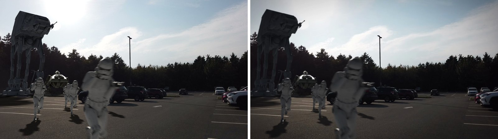
Frame 190. Left: CG straight from Blender. Right: after the three matches.
STEP CHECKLIST
GLOSSARY
Black level: How dark the darkest part of the picture is
Grain: Fine random noise from the camera sensor
WHYA render is cleaner than any camera. Matching black level, softness and grain removes the three clues that give CG away.
CHECKAt 100% zoom you cannot tell the walker’s shadows from the car’s by darkness or sharpness.
FIXCG plays at a different speed from the plate? The sequence was not set to 29.97 in Interpret Footage.
WORKED EXAMPLE · DIFFERENT OBJECTCompositors match grain and softness on every single shot, even invisible ones.
STRETCH (AFTER THE CHECK PASSES)Add a pale blue solid at 10% opacity, set its track matte to the CG’s alpha, so only the CG gets a little distance haze.
Method basis: A1. Values and sequence are authored for this project.
11
Engine glow, a camera shake, and export
IN SHORTPink feathered solid in Add mode following the engines; Transform on an adjustment layer for the shake; grade; render H.264.
READ ALOUD
DOCUMENT: lot_YOURNAME.aep SELECT: Your matched comp TOOLS / ROUTE: Layer › New › Solid · Ellipse mask · Add mode · Layer › New › Adjustment Layer · Effect › Distort › Transform · Composition › Add to Render Queue
Layer › New › Solid, 200 × 200, pink. Draw an ellipse mask on it and feather it 50. Set its mode to Add. Name it Engine glow.
From the first frame the X-wing appears, key the glow’s Position on the ship’s engines every 3–4 frames, and Scale from big to tiny as it flies away. Trim the layer to those frames.
Layer › New › Adjustment Layer, name it Shake. Add Effect › Distort › Transform. Set Scale to 103.
For the 20 frames around the pass-over, key Transform’s Position a few pixels in a different direction on every frame: big moves (10–14 px) as the ship passes, shrinking to nothing.
Add one more adjustment layer with a little Contrast and Vibrance. Composition › Add to Render Queue › H.264 › Render. Name it lot_YOURNAME.mp4.
Action by action: what to click (orange boxes), and what you should see
1The finished layer stack at frame 232.
Click
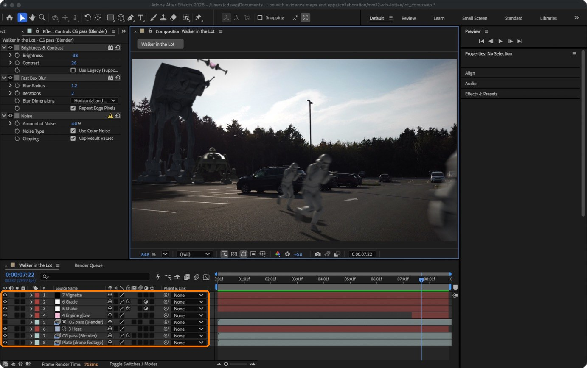
Box: plate, CG, haze (with its matte), engine glow, shake, grade and vignette. The X-wing passes the AT-AT’s head.
What went wrong when we built the demo: in the last eight frames the drone turns sharply, our solved camera jitters, and the CG smears. We ended the composition at frame 262 instead of 270. Trimming a shot is a legitimate fix.
Object
Setting
Value
2 CG
Brightness / Contrast
−38 / 26
2 CG
Box Blur / Noise
1.2 / 4%
Engine glow
Mode / feather
Add / 50
Shake
Transform Scale / biggest move
103 / 14 px
STEP CHECKLIST
GLOSSARY
Adjustment layer: A layer whose effects apply to everything below it
Add mode: Brightens what is underneath; black adds nothing
WHYA real camera would shake when a starfighter passes five metres overhead. The shake tells the audience how close and how loud it was.
CHECKAn MP4 where the engines glow, the frame jolts as the ship passes, and nothing slides.
FIXBlack edges flash during the shake? The Transform Scale is still 100. Set it to 103.
WORKED EXAMPLE · DIFFERENT OBJECTSound designers do the same job with a low rumble. If you edit this shot, add one.
STRETCH (AFTER THE CHECK PASSES)Add a quick warm flash on the troopers as the ship passes (an orange solid, Add, 3 frames, 15%).
Method basis: A1. Values and sequence are authored for this project.
12
Practical check: the director’s change
IN SHORTRead the card; decide the stage; change copies; render; explain three decisions; credit.
READ ALOUD
DOCUMENT: Copies of your files SELECT: One director’s card from your teacher TOOLS / ROUTE: Everything in this workbook
Take one card (below). Read it twice. Decide which stage it changes: the track, the set, the animation or the composite.
Save copies of your Blender file and After Effects project before you change anything.
Make the change. Re-render only what you need to.
Render the new MP4. Keep the original too.
Screen both. Explain one matchmove decision, one lighting decision and one compositing decision.
Credit the plate, the models, the animations and the software.
Card
The director says
1 · Closer
“The walker is too far away. I want it to step right over the camera.”
2 · Behind the cars
“It should come out from behind the parked cars.” (You will need a holdout.)
3 · Dusk
“Make it evening. Long shadows, warm light, and the engines are the brightest thing in the frame.”
4 · Our shot
“Use a different 8-second clip you film yourself at school, and put one thing in it.”
Independent evidence: the main achievement evidence for this tutorial.
STEP CHECKLIST
GLOSSARY
Director’s card: A change request you must deliver
WHYEach card changes a different stage of the shot. Knowing which stage is the skill.
CHECKA second MP4 that meets the card, with a three-decision explanation and full credits.
FIXStuck? Name the stage the card touches first. (Independent step: the Coach can explain tools but not decide your changes.)
WORKED EXAMPLENone today: this is independent evidence. Use the success criteria.
STRETCH (AFTER THE CHECK PASSES)Take two cards at once.
Method basis: B2 · A1. Values and sequence are authored for this project.
Before you submit
Student QA.
Evidence conversation
Keep it short and specific.
SENTENCE FRAMESMy solve error was ___ px after I deleted ___. · I set the scale from ___ = ___ m. · The sun is ___ because the shadows ___. · For the director’s card I changed ___ and re-rendered ___.
T1 Plate: drone footage of the school parking lot, filmed by your teacher.
Photo credits
Figures marked Illustration are drawn, not screenshots. Step values are starting points authored for this project. Draft for teacher review; not yet classroom-piloted.